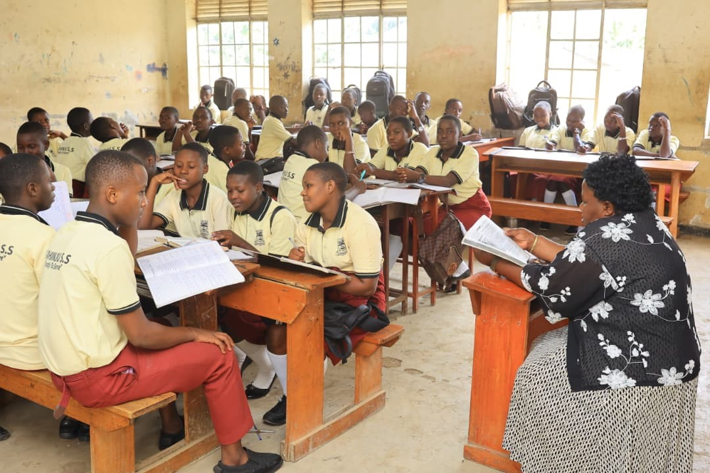
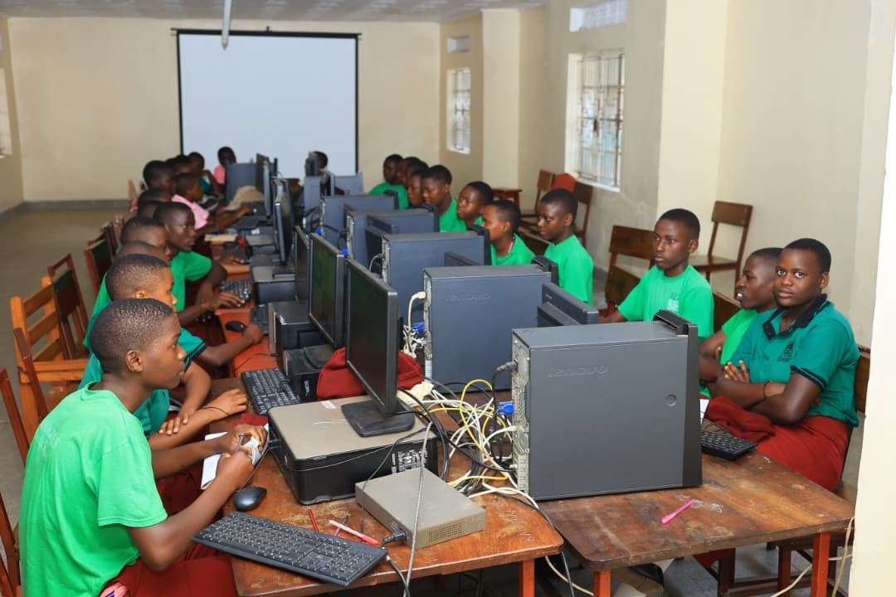

Academics
Excellence in Education • Discipline • Innovation
Academic Excellence
Kahinju Senior Secondary School provides quality and meaningful education aimed at producing independent, disciplined and innovative learners prepared for higher education and national development.
Our curriculum combines theory, practical learning, ICT integration and continuous assessment to ensure holistic academic growth.

Academic Programmes
O-Level Education
Senior 1 – Senior 4 learners build strong academic foundations.
- Mathematics & English
- Sciences (Biology, Chemistry, Physics)
- Humanities
- ICT & Practical Skills
A-Level Education
Specialized subject combinations preparing students for university.
- PCM / PCB Sciences
- HEG Arts Combination
- Humanities & Languages
- Research & Independent Study
ICT Integration
Technology supported learning for modern education.
- Computer Laboratory
- Digital Research Skills
- Online Learning Support
- Practical ICT Lessons
Subjects Offered

Academic Facilities
- ✔ Modern Science Laboratories
- ✔ Computer Laboratory
- ✔ School Library
- ✔ Examination Preparation Programs
- ✔ Guidance & Counseling
Build Your Future With Us
Join Kahinju Senior Secondary School and achieve academic excellence.
Register Now